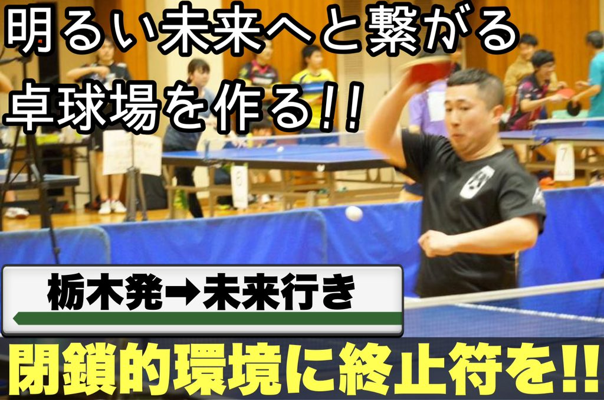

栃木県では知らない人はいない自称無職のカリスマ卓球YouTuber。現在の登録者数(2021/06/21時点)は5,960人。
「13時間卓球」というイベントを定期的に開催し、卓人の輪を全国的に広げている。
趣味はザリガニを釣ること。
#13時間卓球
卓球場
メッセージ

この度は皆様のご支援・ご協力のお陰で、無事にクラウドファンディングの目標額を達成することが出来ました。
閉鎖的なこの街をどうしても変えたい!
卓球を続けられる環境が整っておらず、練習相手を見つけるのに苦労していた自分がこうやって何不自由なく卓球ができるのは、紛れもなく皆さんのお陰です。
だからこそ『自分だけでなく、より多くの選手が卓球を続けられる場所を作りたい』
その一心で卓球場開業に踏み込む決意をしました。
「卓球をやりたくても出来なかった」
自分の辛い経験をこれからの若者にはさせたくありません。
チーム・学校・職場に属さない卓球人達も気軽に立ち寄れる卓球場を作る。明るい未来へと繋がる卓球場を栃木に作ります。
こんな方におすすめ
-
時間を気にせず卓球できる！夜中もOK！
-
コロナ対策もしっかり
-
近くに道の駅があり立地も良好！